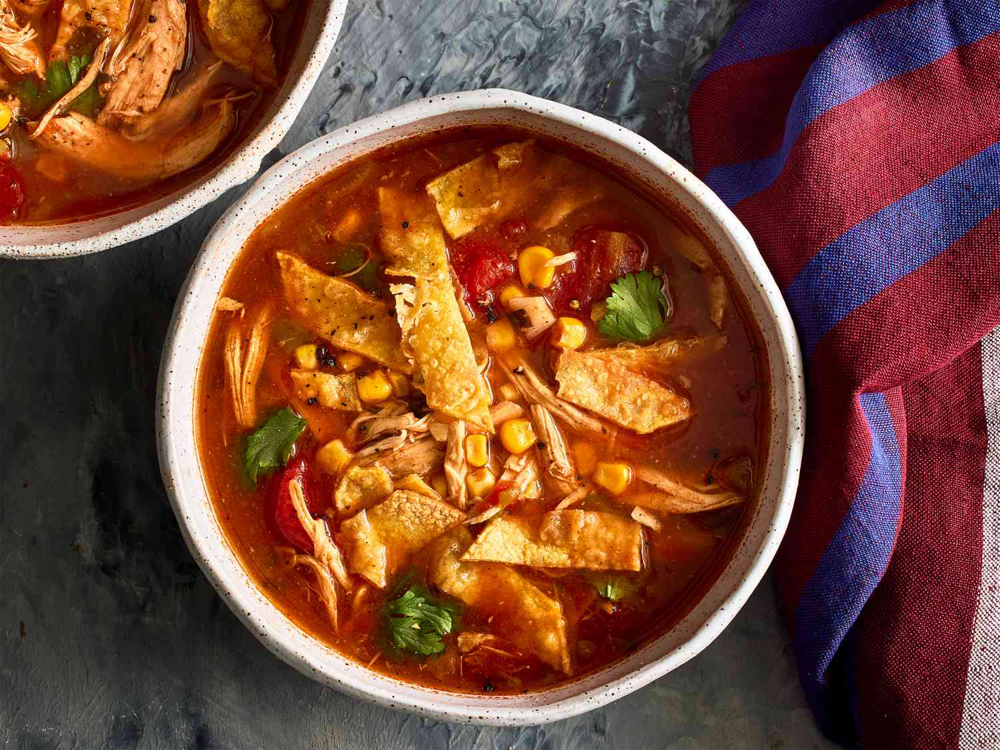

Chicken Tortilla Soup

Description
A twist on some chicken soup for the soul.
Ingredients
- 3 Boneless Chicken Breasts
- 32 oz Chicken Broth
- 1/2 tsp Cumin
- 1 1/2 tsp Chili Powder
- 2 tbsp Lemon Juice
- 1 Can of Corn, drained
- 1 Can of Black Beans, drained
- Jar of Preferred Salsa
- Corn Tortilla, optional
Directions
- Fry chicken in olive oil; set aside to cool and shred
- Add shredded chicken, cumin, chili powder, lemon juice, and half the jar of salsa to pan to simmer
- Bring chicken broth to a boil
- Add corn, black beans, other half of salsa, and the chicken mixture to the broth
- Stir every 10 minutes for 1.5 hours
- Add strips of corn tortilla, allow to soften, and serve
Back to Recipes